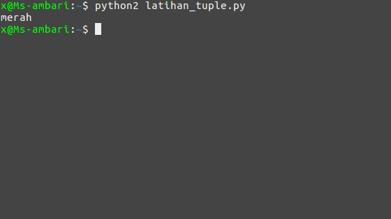
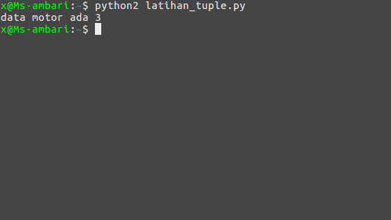

python tuple
apa itu tuple? tuple adalah stuktur data yang digunakan untuk menyimpan sekumpulan data. tuple sama seperti list hanya saja nilai isi tupe tersebut tidak bisa kita ubah atau hapus, namun dapat kita isi dengan berbagai nilai tuple ditulis dengan tanda kurung biasa ()
mungkin saya tidak akan banyak membahas tentang tuple disini, tapi saya bahas yang pentingnya saja. jika ingin mempelajari lebih dalam tentang tuple di python. kamu bisa melihat dokumentasi tentang tuple di situs resminya python
yang akan saya bahas disini adalah
1. membuat tuple2. mengakses niai/isi tuple3. menghitung nilai tuple
1. membuat tuple
seperti yang saya jelaskan di atas tadi, untuk membuat tuple
kita bisa menggunakan tanda kurung () Contoh:
warna = ("merah","kuning","hijau")
penulisan tuple tidak beda jauh dengan penulisan list yang sebelumnya kita pelajari hanya saja list menggunakan kurung siku [] sedangkan tuple menggunakan kurung biasa ()
2. mengakses nilai/isi tuple
untuk mengakses nilai tuple juga sama seperti mengakses nilai pada list yaitu dengan memanggil nomor indexnya
Contoh:
# membuat tuple
warna = ("merah","kuning","hijau")
# mengakses nilai tuple
print warna[0]
Hasilnya:

3. menghitung nilai tupe
untuk menghitung nilai di tuple bisa kita gunakan fungsi len()
fungsi len() ini tidak hanya untuk menghitung tuple, tapi bisa juga untuk mengitung list,array,string dsb.
mari kita latihan, buat file baru bernama latihan_tuple.py dan ikuti kode berikut
# membuat tuple
motor = ("ninja","fu","mio")
# mengitung nilai tupe dengan len()
print "data motor ada {}".format(len(motor))
Hasilnya:

mungkin segitu saja pembelajaran tentang tuple, dan silahkan pelajari tutorial selanjutnya
Lanjut